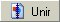
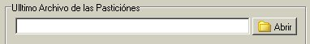
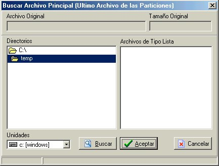
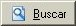
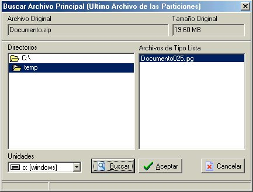
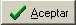
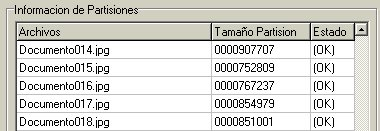
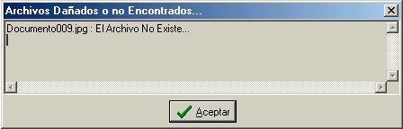
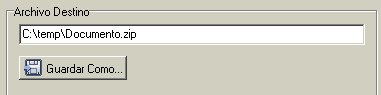

| Primeramente pulsamos el botón  ,
inmediatamente, nos aparecerá una ventana en la cual
tendremos que indicar en donde se encuentra el Ultimo Archivo
de las Particiones.

Para hacer
eso pulsamos en el botón de Abrir, que se muestra en
la figura Antenor, y nos aparecerá una ventana como la
siguiente.

Esta ventana
nos ayudara a encontrar el Archivo Principal el cual es el
ultimo archivo de las particiones, y contiene en su parte final
toda la información necesaria para poder unir y/o
descamuflajear los archivos. Para hacer eso debemos de seleccionar
el directorio en el cual hallamos guardado las particiones.
Mientras
este buscando ese directorio No aparecerá nada a su
derecha.
Una vez en el directorio correcto presionamos
el botón  .
Si son muchas
las particiones o archivos dentro del directorio en el que se esta
buscando, puede tardar unos segundos en encontrar el Archivo
Principal, es por eso que cuenta con una barra que indica el
avance de la búsqueda.
Una vez
terminada la búsqueda aparecerá a la derecha los Archivos
Principales como se muestra en la siguiente figura.

Seleccionamos el Archivo de la Derecha, aquí
podemos observar en la parte superior de la ventana un par de
datos que es solo información del Archivo Original,
ósea el que se partición o camuflajeo.
Presionamos el Botón
 ,
y nos regresara a la ventana anterior pero ya tendremos la dirección
del Archivo Principal, como se muestra en la siguiente figura.

Para continuar presionamos el botón
 . .
Con eso llegamos a la sección de Información
de las Particiones, aquí se hace un chequeo minucioso
de las particiones para comprobar la autenticidad de cada una, con
el fin de no unir un archivo que contenga particiones dañadas
o incompletas.

En la figura
anterior podemos ver la cantidad de bytes que ocupa cada partición
y además lo mas importante: si están en buenas
condiciones las particiones.
En caso de
que no Exista o este Dañaba alguna partición
nos aparecerá una ventana como la siguiente, en la cual nos
indica todos esos casos.

Si todas las particiones estas correctas,
presionamos el botón ,
y nos aparecerá
la ventana de Archivo Destino. Aquí podremos elegir
el directorio en el que dejaremos el archivo resultante o
descamuflajeado. Si queremos cambiar de directorio solo
presionamos en el botón Guardar Como y elegimos el
directorio deseado.

Finalmente presionamos el botón
de  ,
al hacer eso el
kamaleon se pondrá a generar el Archivo Destino y
tardara unos segundos o minutos según el tamaño del
archivo resultante, es por eso que estará desplegando un
par de barras que muestran el estado de avance del proceso. ,
al hacer eso el
kamaleon se pondrá a generar el Archivo Destino y
tardara unos segundos o minutos según el tamaño del
archivo resultante, es por eso que estará desplegando un
par de barras que muestran el estado de avance del proceso.
|